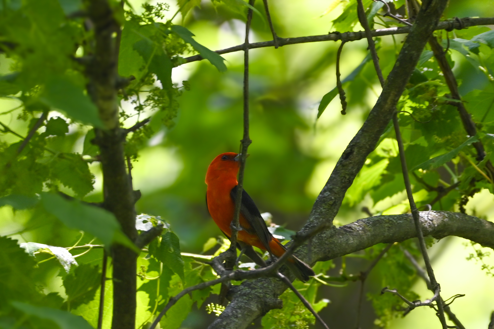
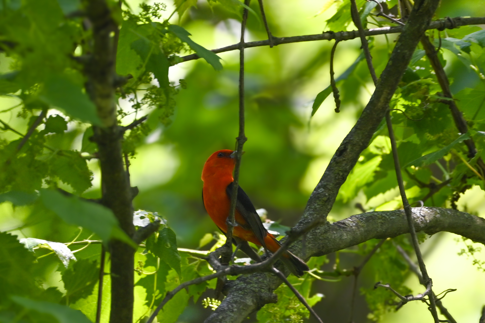

Around 40% of all bird species migrate regularly. Many travel only a short distance, from one habitat to another in the same general vicinity. Others travel across continents to seek out favorable weather and stable food sources. No bird species travels farther than the Arctic Tern (Sterna paradisaea), which annually migrates over 55,000 miles from the Arctic to the Antartic.
Migration is exciting for humans because we get to see feathered friends we haven't seen in a while, but the excitement is fleeting. Migrating birds always move on. In Chicago, for example, American Goldfinches are a popular sight from early summer through mid-fall. They can be seen year-round in most of the US, but they typically breed in Canada and over-winter farther south. Other fan favorites like the Rose-breasted Grosbeak spend very little time in Chicago. People (like me) flock to Montrose Point to see them when they stop through.
Birds migrate for different reasons. Some to return to ancestral nursing grounds, others to follow food and escape bad weather. Scientists are just now finding out where many birds go, and why, but climate change and habitat destruction are re-shaping migration patterns in real-time. The hardest part about understanding migration is tracking birds and then understanding why they went where they did. Tracking programs and field surveys are important, but they can only tell us so much. Citizen science programs like the Cornell Lab's "Big Backyard Bird Count" are important for understanding bird habits and changes over time. Anyone can participate by downloading the eBird app and spending a little time recording bird sightings.
And in the meantime, check out the Audubon Society's Migration Explorer tool to see where your favorite bird spends a year. Happy birding!